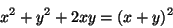

LaTeX其它功能
由於數學上的Markup語言MATHML並不是很流行， 而且我覺得比LaTeX來的囉唆，所以數學上我想只介紹LaTeX就好
另外由於LaTeX是一種命令不像SGML只是tag，會有比較多的控制自由度 但相對的比較複雜，
數學表示式
數學是TeX的靈魂， 數學式子表示有兩種情況， 夾在文字中的與獨立成一行顯示的，總共3種表示
\bigin{math} 夾在文字行中
\begin{displaymath} 獨立成一行顯示
\bigin{equation} 獨立成一行顯示
|
$ $可以拿來代替\begin{math} \end{math}
\[ \]代替\begin{displaymath}\end{displaymath}
\begin{equation}是會自動在式子後加上流水號
數學元素
基本數學
鍵盤看得到的0 - 9 a - Z 還有 + - = < > / : ! ' | { } ( )， 都可以直接用
分數
\frac{1}{x+y}
|
Figure 2-6. 分數

a_0 + \frac{1}{\displaystyle a_1
+ \frac{1}{\displaystyle a_2}}
|
Figure 2-7. 繁分數
根號
\sqrt[3]{8} = 2
|
Figure 2-8. 根號
指數上下標
x^2 + y^2 + 2xy =(x+y)^2 |
Figure 2-9. 上標

a_0 + a_1 + \cdots +a_n |
Figure 2-10. 下標
x_{2y}^{n!} + x_{2z}^{m!}
|
Figure 2-11. 上下標
線性代數
\vec{x}
|
Figure 2-12. 向量
\tilde{\imath}
|
Figure 2-13. 複數
\begin{array}{ *{3} {c @{+}} c @{=} c}
a_{11}x_1 & a_{21}x_1 & \cdots & a_{1n}x_n & b_1 \\
a_{12}x_1 & a_{22}x_1 & \cdots & a_{2n}x_n & b_2 \\
\multicolumn{5}{c}{\dotfill} \\
a_{m1}x_1 & a_{m2}x_1 & \cdots & a_{mn}x_n & b_m \\
\end{array}
|
Figure 2-14. 線性方程組
*{3}{c } 是說有連續3個cloumn，都是向中對齊，當然也可以寫*{3}{|c|}畫垂直線
@{+} @{=} 是說這個column的內容通通是+ 或是= 這兩個字
*{3} {c @{+}}
就變成有連續3個column中的東西a_m_1到cdots，
後面都帶有一個+號，並且置中對齊，
第二個c指的就是a_m_n這一排，最後一個c指的就是b_m這排。
|
\left|
\begin{array}{cc}
x_{11} & x_{12} \\
x_{21} & x_{22} \\
\end{array}
\right| = x_{11} x_{22} - x_{21} x_{12}
|
Figure 2-15. 行列式
統計
\sum_{i=0}^{n}
|
Figure 2-16. 總合

\prod_{\nu=0 }^{n}
|
Figure 2-17. 乘積
\lim_{x \to \infty}
|
Figure 2-18. 極限
微分
mx'' + bx' + k = \sin(2x + \pi) |
Figure 2-19. 微方
Figure 2-20. 偏微
積分
\int_{0}^{\infty} f_i(x)g_i(x) \mathrm{d}x
|
Figure 2-21. 積分
\oint_{0}^{2\pi} \mathrm{d}\theta
|
Figure 2-22. 線積分
其它
LaTeX的數學符號已經都做好了，都用一個命令代替， 說實話我覺得寫個\alpha比用老鼠在那邊搖啊搖還來得快又精準， \vec{\alpha}畫個Alpha向量沒有比這快吧
Figure 2-23. 希臘字表達
\, 小 \: 中 \; 大 \! 變窄 |
\stackrel{upeer}{lower}
A \stackrel{\alpha'}{longrightarrow} B
|
Figure 2-24. 符號相疊
\begin{eqnarray}
(x+y)(x-y) & = & x^2 -xy +xy - y^2 \nonumber \\
& = & x^2 - y^2 \\
(x+t)^2 & = & x^2 + 2xy +y^2
\end{eqnarray}
|
除了標準的LaTeX的數學外， American Math Society也有多出一個AMS LaTeX，多出一些數學表示法
Counter
有些數字表達是有流水號的，這些需要counter來記憶， 例如系統自動幫我們維護了page, chapter這些counter
我們可以自定counter， 像table的例子裡面的Test Case ID， 我們可以用counter來維護它，不然每次打到忘了現在是幾號了
設定counter
\newcounter{counter_name} 給一個新counter 名字
\setcounter{counter_name}{1} 設定counter的值通常設初值時用
\stepcounter{counter_name} 把counter+1
|
印出counter的值
\arabic{counter_name} 印出阿拉伯數字
\roman{counter_name} 印出羅馬數字
\thecounter_name 印出阿拉伯數字
|
\thechapter.\thesection |
\newcommand{\new_ctr}{\thechapter.\thesection}
或
\renewcommand{\thesection}{\thechapter.\thesection}
|